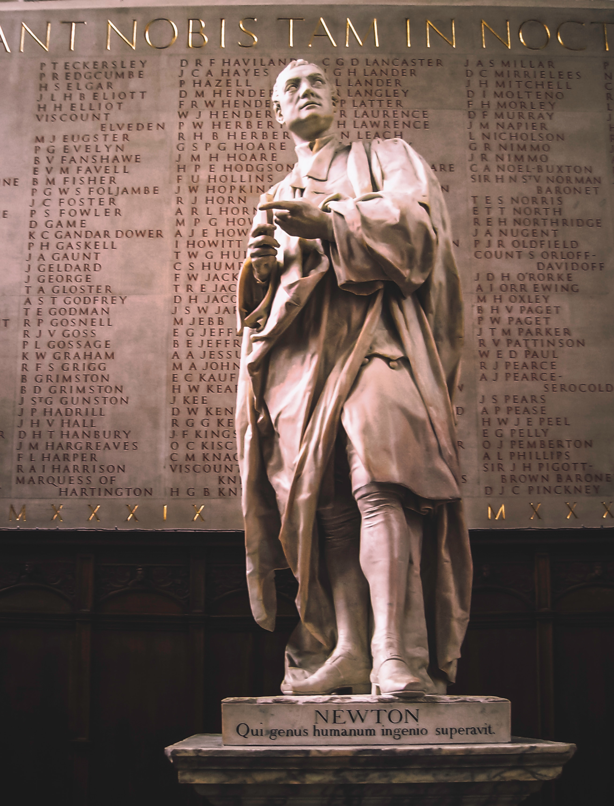
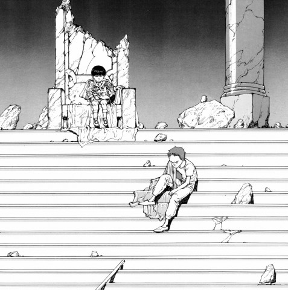

¿Quién Soy?
Semblanza
Una buena forma de aproximar quiénes somos, es a través de lo que hacemos y pensamos.
Nací en 1999 en Guadalajara, Jalisco, México y a lo largo de mi vida he estado interesado en ver y saber cómo funciona el mundo. Para mí es como un experimento en tiempo real. De lo anterior, nace mi interés por estudiar física y matemáticas. Según mi yo de 18 años, esas dos disciplinas bastaban para descubrir qué es la realidad y parte de mi viaje a través de la física ha implicado darme cuenta de que estaba equivocado. No es una queja, al contrario, si todo saliera como esperamos nada tendría sentido ¿cierto?
Formación académica
Soy un egresado de la Licenciatura en Física de la Universidad de Guadalajara y actualmente me encuentro estudiando una Maestría en Ciencias Computacionales en el Instituto Tecnológico y de Estudios Superiores de Monterrey en Campus Guadalajara. Mi proyecto de tesis consiste en usar métodos basados en Cadenas de Markov - Monte Carlo para estimar los parámetros (Masa, parámetro de rotación, luminosidad, etc.) de estrellas que se convierten en supernovas Tipo II.
En la licenciatura, trabajé en el área de Relatividad teórica y numérica, en donde encontré las órbitas geodésicas de partículas alrededor de agujeros negros de Schwarzschild, usando Python para resolver las Ecuaciones de Campo de Einstein y visualizar los resultados. Además, al término de mi licenciatura publiqué un artículo respecto a la teoría de ondas gravitacionales, que se puede consultar en la sección de Publicaciones.
Intereses personales
Mis pasiones fuera de la física son la música y el dibujo. Creo que es importante tener una actividad artística para poder liberar las emociones del día a día, sin importar si somos o no considerados "buenos" en ello. Respecto a mis pasatiempos, me gusta leer,los videojuegos, ver películas y series, pasear en entornos naturales, conocer gente y nuevos lugares. Soy amante de los animales, no me gusta el color amarillo y mis películas favoritas son: 2001: A Space Odyssey (Stanley Kubric, 1968), What ever happened to Baby Jane? (Robert Aldrich, 1962) y Akira (Katsuhiro Otomo, 1988).